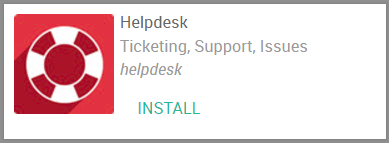
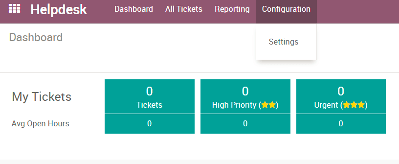
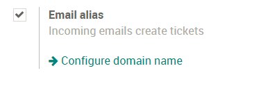

Общая информация
Начало работы со службой поддержки
Установка Службы поддержки в Odoo
Откройте Приложения, найдите Служба поддержки (Helpdesk) и нажмите Установить
Настройка команд Службы поддержки
По умолчанию, в Службе поддержки создана одна команда "Поддержка"

Чтобы изменить настройки этой команду или создать новые, выберите «Конфигурация» в верхнем меню и выберите «Настройки»
Здесь вы можете создавать новые команды и решать, кто будет в ней состоять, как ваши клиенты смогут отправить вам запросы на поддержку, настраивать Соглашение об уровне предоставления услуги и рейтинги. Методы назначения запросу ответственного: случайным образом, сбалансированно или вручную.
Настройка разных этапов для каждой команды
Сначала вам нужно активировать режим разработчика. Для этого перейдите в модуль Настройки, и выберите пункт "Активировать режим разработчика" в нижнем правом углу.

Теперь, в модуле Служба поддержки в меню «Конфигурация» вы найдете дополнительные опции, например «Этапы». Здесь вы можете создавать новые этапы и назначать эти этапы для 1 или нескольких команд.
Начать получать запросы на поддержку
Как мои покупатели могут отправить запросы на поддержку?
Выберите «Конфигурация» в верхнем меню и перейдите в «Настройки», выберите нужную команду. В разделе "Каналы" вы найдете 4 варианта:
Email Alias позволит клиентам отправлять письмо на адрес электронной почты, который вы выбрали для создания запроса на поддержку. Тема сообщения электронной почты становится Названием запроса.

Форма на сайте позволяет вашему клиенту перейти на страницу yourwebsite.com/helpdesk/support-1/submit и отправить запрос через форму - например, как на странице https://odoo.com/help

Живой чат позволяет вашим клиентам отправлять запросы через него на вашем сайте. Ваш клиент начнет чат, и ваш оператор Live Chat может создать запрос на поддержку, используя команду /helpdesk Subject of Ticket.

Также можно отправлять Запросы на поддержку через соединение API. Про данный способ смотрите документацию здесь.
Запрос на поддержку создан, что дальше?
Теперь ваши сотрудники могут начать обрабатывать эти запросы! Если вы выбрали ручной метод назначения ответственных, вашим сотрудникам необходимо будет "забирать" себе запросы, используя кнопку «Назначить мне» в левом верхнем углу запроса или добавив себя в поле «Ответственный».

Если вы выбрали методы «Случайным образом» или «Сбалансированный», запросы будут назначены члену этой команды автоматически.
С этого момента сотрудники начнут работу по закрытию запросов. Когда работы по вопросу запроса завершены, сотрудник переносит билет на последний этап.
Как пометить запрос на поддержку срочным?
На запросе есть значки звездочек. Вы можете определить, насколько срочный данный запрос, выбрав одну или несколько звезд. Это можно сделать на канбан доске или на странице запроса.

Чтобы настроить Соглашение об уровне предоставления услуг для своих сотрудников, активируйте настройку "SLA Polieces" в разделе «Настройки»,

Здесь же выберите «Настроить SLA-политики» и нажмите «Создать».
Выберите команду службы поддержки, каков минимальный приоритет в билете (звезды) и цели для билета.

Что делать, если билет заблокирован или готов к работе?
Если запрос не может быть удовлетворен или заблокирован, вы можете настроить "Канбан статус" для запроса. У вас есть 3 варианта:
Серый - Нормальное Состояние
Красный - Заблокирован
Зеленый - готова к следующему этапу
Как и звезды срочности, вы можете настроить состояние на Канбан доске или в форме редактирования Запроса.

Как мои сотрудники могут учитывать потраченное на запрос время?
Во-первых, в "настройках" и выберите опцию "Табель для Запроса". Появится поле, в котором вы можете выбрать проект, в котором будет вестись учет затраченного времени.
Теперь, когда вы выбрали проект и сохранили его. вернувшись к Запросам на поддержку, вы увидите новую вкладку «Табели»

Здесь сотрудники можете добавлять строки, в которых указывать работы, проделанные по запросу на поддержку.
Как разрешить вашим клиентам оценивать полученные услуги
Вам нужно активировать рейтинги в разделе "настройки"
Теперь, когда билет перемещается на этапы "Решено" или "Завершено", клиенту отправится по электронной посте письмо с вопросом о качестве оказания услуги..